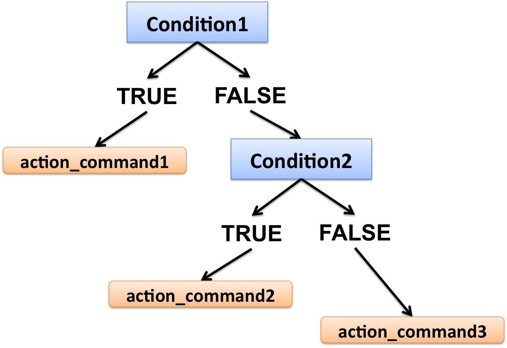

Part15 Conditional statement
“if” statement
Structure of the if statement:
If the condition is TRUE, then proceed to the action_command; if it is FALSE, nothing happens.
With else
If the condition is TRUE, then proceed to the action_command1; if the condition is FALSE, proceed to action_command2.
With else if

If the condition1 is TRUE, then proceed to the action_command1; if the condition1 is FALSE, test for condition2: if the condition2 is TRUE, proceed to the action_command2; if neither condition1 nor condition2 are TRUE, then proceed to the action_command3.
Note that you can add up as many else if statements as you want.
- Example without else
k <- -2
# Test whether k is positive or negative or equal to 0
if(k < 0){
print("negative")
}else if(k > 0){
print("positive")
}else if(k == 0){
print("is 0")
}- Example with else
k <- 10
# print if value is <= 3
if(k <= 3){
print("less than or equal to 3")
}else if(k >= 8){
print("greater than or equal to 8")
}else{
print("greater than 3 and less than 8")
}- If statement in For loop:
# Matrix
mymat <- matrix(rnorm(800),
nrow=50)
# Loop over rows of mymat and print row if its median value is > 0
for(i in 1:nrow(mymat)){
# extract the current row
rowi <- mymat[i,]
# if median of row is > 0, print row
if(median(rowi) > 0){
print(rowi)
}
}15.1 Exercise 10: If statement
Create the script “exercise10.R” and save it to the “Rcourse/Module2” directory: you will save all the commands of exercise 10 in that script.
Remember you can comment the code using #.
correction
1- Create vector vec2 as:
- Use an if statement and the %in% function to check whether “apple” is present in vec2 (in such case print “there is an apple!”)
correction
## [1] "there is an apple there"- Use an if statement and the %in% function to check whether “grapefruit” is present in vec2: if “grapefruit” is not found, test for a second condition (using else if) that checks if “pear” is found.
correction
if("grapefruit" %in% vec2){
print("there is a grapefruit there")
}else if("pear" %in% vec2){
print("there is no grapefruit but there is a pear")
}## [1] "there is no grapefruit but there is a pear"- Add an else section in case neither grapefruit nor pear is found in vec2.
Test your if statement also on vec3:
correction
if("grapefruit" %in% vec2){
print("there is a grapefruit there")
}else if("pear" %in% vec2){
print("there is no grapefruit but there is a pear")
}else{
print("no grapefruit and no pear")
}## [1] "there is no grapefruit but there is a pear"2- If statement in for loop
Create the following matrix:
Loop over rows with for of mat4 and print row number and entire row if you find an NA.
correction
for(k in 1:nrow(mat4)){
# extract row
rowk <- mat4[k,]
if(any(is.na(rowk))){
print(k)
print(rowk)
}
}## [1] 3
## [1] 1 NA
## [1] 4
## [1] NA 03- For loop, if statement and regular expression
Create vector vec4 as:
Loop over each element of “vec4”:
* If the element is a human gene (all upper-case characters), print a vector of two elements: the name of the gene and “human gene”.
* If the element is a mouse gene (only the first character is in upper-case), print a vector of two elements: the name of the gene and “mouse gene”.
Tip 1: Use grep and a regular expression in the if statement !
Tip 2: When grep does not find a match, it returns an element of length 0 !
Tip 3: You can also use grepl: check the help page
correction
for(gene in vec4){
if(length(grep(pattern="^[A-Z0-9]+$", x=gene)) != 0){
print(c(gene, "human gene"))
}else if(length(grep(pattern="^[A-Z]{1}[a-z0-9]+$", x=gene)) != 0){
print(c(gene, "mouse gene"))
}
}## [1] "Oct4" "mouse gene"
## [1] "DEPP" "human gene"
## [1] "RSU1" "human gene"
## [1] "Hk2" "mouse gene"
## [1] "ZNF37A" "human gene"
## [1] "C1QL1" "human gene"
## [1] "Shh" "mouse gene"
## [1] "Cdkn2a" "mouse gene"# With grepl
for(gene in vec4){
if(grepl(pattern="^[A-Z0-9]+$", x=gene)){
print(c(gene, "human gene"))
}else if(grepl(pattern="^[A-Z]{1}[a-z0-9]+$", x=gene)){
print(c(gene, "mouse gene"))
}
}## [1] "Oct4" "mouse gene"
## [1] "DEPP" "human gene"
## [1] "RSU1" "human gene"
## [1] "Hk2" "mouse gene"
## [1] "ZNF37A" "human gene"
## [1] "C1QL1" "human gene"
## [1] "Shh" "mouse gene"
## [1] "Cdkn2a" "mouse gene"